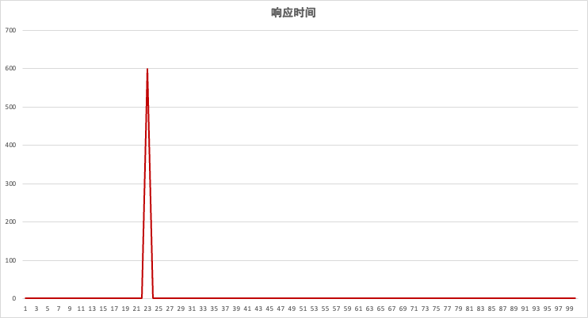
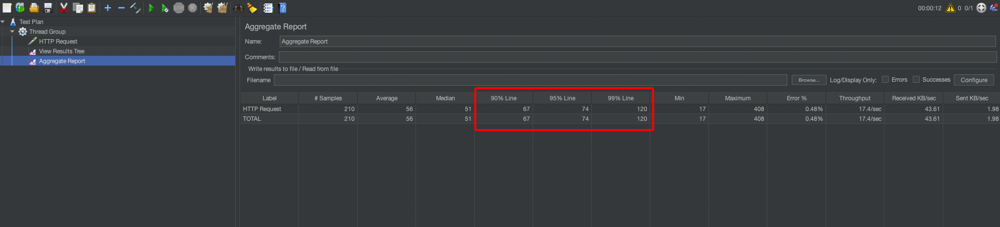

性能测试指标TP99，比平均响应时间更需要关注¶

什么是TP99？¶
TP是Top Percentile的首字母缩写，TP99是指“前百分之九十九”，用来表示满足百分之九十九的网络请求所需的最低耗时。
该怎么理解？举个简单例子，下图是100次请求的响应时间走势图：

第23次请求的响应时间为600ms，其他请求的响应全部为1ms，这个走势图也就是常说的“尖刺”。我们来计算一下：
①平均响应时间
平均响应时间 = 所有请求响应时间之和 / 请求次数，等于6.99ms
②TP99
TP99 = 把响应时间从小到大排列，取第99%那个位置的值，等于1ms
为什么TP99更需要关注？¶
平均响应时间受极端值的影响较大，因为出现1个尖刺，平均响应时间几乎是TP99的7倍！
TP99更能反映大多数请求的情况，通过TP99为1ms可以知道，应用系统对于大多数请求，都能在1ms内响应，整体性能达标。而对于尖刺，我们可以通过走势图的MAX来发现，单独进行分析。
在JMeter的Aggregate Report中，有3个字段：90% Line、95% Line、99%Line

其实就是指TP90、TP95、TP99。此外，在实际工作中，我们还会关注TP999，三个九，也就是99.9%。关注TP多少，取决于我们对性能的要求怎么样，我们希望应用系统满足多少请求。如果对性能要求不高，关注TP90就够了，允许10%请求出现波动。如果对性能要求很高，则需要关注TP999，99.9%请求都能够快速响应。